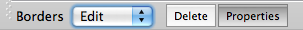

Border editing
In Border Mode, select Edit from the
pulldown displayed at the left bottom of the Toolbar.
Border editing is only active on surface structures in Montage,
All, or Surface views.

- Any Borders to be edited must be displayed. If they are off,
toggle Display Borders on in the Features
Toolbox Borders tab and make sure the specific
borders that will be edited are toggled on in Borders:
Selection.
- By default, the Properties
button is activated. If a displayed border is
clicked, the Edit Border Properties box will pop up
and a border's Name, Class, or Point Order can be
edited.

- If the Delete button is
clicked, each border clicked on in the display will be
deleted.
- To save the edits made, go to Save/Manage
Files in the File Menu and save
the Border file edited.